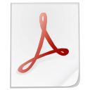
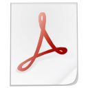
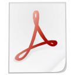

Adrien DE CONTO
13 rue Saint Fort
25660 MORRE
deconto1308@gmail.com
06 81 20 75 06
Né le 13/08/1994
Titulaire du Permis B
Ingénieur en informatique et electronique cherche stage de fin d'études. Disponible du 1er avril au 30 septembre 2016
Formation
5 ème année d'école d'ingénieur à Polytech spécialité
Instrumentation Automatisme et Informatique
2014 - BTS Systèmes
Electroniques et Numériques
- Lycée Victor Hugo, Besançon
2012 - BAC S option
Sciences de l'Ingénieur
avec mention - Lycée Victor Hugo, Besançon
Expérience professionnelle
Juillet-Août 2016 Emploi d'été -
Technicien de production
-
Delta microtechnique
, usinage sur centre numérique de tournage
Mai-Juin 2016
Assistant ingénieur
-
Peugeot Scooters
, service développement électrique département recherche et développement
Diverses missions de cablage et d'électronique
Travail sur l'OBD et le réseau CAN
Conception et réalisation d'une application Android
Juin-Juillet 2015 Emploi d'été -
Ouvrier d'atelier
- SIS Technotime 25,
maroquinerie de luxe
Juillet-Août 2014 Emploi d'été -
Technicien de production
- FCI 25
Août 2013 Emploi d'été -
Ouvrier d'atelier
- SIS Technotime 25,
maroquinerie de luxe
Mai-Juin 2013
Technicien
- Observatoire de Besançon,
centre de recherche
Réalisation d'une maquette pédagogique sur l'effet Doppler
Mise en œuvre d'un pic, d'un FPGA, d'un Raspberry Pi
Conception et réalisation de cartes électroniques
2010-2014
Vendeur de Fruits et Légumes
- Marché Couvert Besançon, le dimanche matin
Compétences
Anglais : courant
Développement : C, C++, Python, Java, PHP
Standards informatiques :SQL, HTML, CSS, JavaScript
Conception et réalisation de systèmes électroniques
Montage de composants traversants et montés en surface (CMS)
Logiciels de DAO et CAO : Solidworks, P-CAD, Proteus, Cura
Systèmes Windows et Linux
Traitement du signal analogique et numérique
Vie associative
2015 - 2016 :
Responsable
des makers du fablab de Polytech
2014 - 2015 : Membre
actif
du fablab et du club de robotique de Polytech
Depuis 2013 - Encadre des scéances d'escalade pour le Club Alpin Francais
2013 : Création d'un club de robotique axé sur l'
arduino
au Lycée Victor Hugo
Centres d'intérêt
Escalade en falaise et sur structure artificielle,
initiateur diplômé
Jeux de stratégie
Bricolage et réalisation
do it yourself
Projet personnel et scolaire
Fabrication d'une
imprimante 3D
Nombreux projets 3D dont un qui a gagné le concours 3D du fablab74
Fabrication d'une
fraiseuse numérique
Conception d'un comparateur de carte à collectionner
Apprentissage par projet : création d'un système
domotique
Projet de BTS : création d'un banc de mesure utilisant le
réseau CAN
Projet de terminale: participation au challenge ARTEC

 
